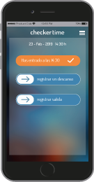
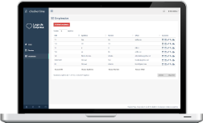

Registro del horario laboral
Los trabajadores registran las entradas, salidas y descansos a través del móvil. Nuestra app geolocaliza el sitio desde donde se realizan.
Desde la web podrá gestionar las entradas y salidas de sus empleados, tramitar hojas de registros con su gestoría, etc..
Sin necesidad de descargar ningún programa, podrá acceder al panel de control y gestionar altas, bajas, exportar informes, así como enviarlos a su gestoria comódamente.
Las asesorías laborales pueden disponer de un perfil de acceso a la empresa, mediante el cual pueden disponer de los datos necesarios evitando trámites y reduciendo tiempo de gestión.